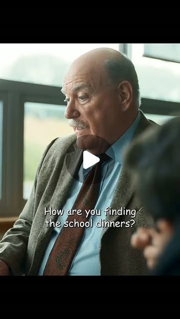

Instagram Reel

I Swear tells the true story of John Davidson, a Scottish man diagnosed with ...
video transcript (enriched by ClaudeClaw)
Summary
[CAPTION]
I Swear tells the true story of John Davidson, a Scottish man diagnosed with Tourette syndrome as a teenager at a time when the condition was widely misunderstood.
As John's symptoms become more severe, he faces bullying, isolation, and judgment from classmates, teachers, and even tho...
[CAPTION]
I Swear tells the true story of John Davidson, a Scottish man diagnosed with Tourette syndrome as a teenager at a time when the condition was widely misunderstood.
As John's symptoms become more severe, he faces bullying, isolation, and judgment from classmates, teachers, and even those closest to him. Despite these challenges, he refuses to let the condition define his life. With the support of a few compassionate people, he gradually builds confidence and becomes a passionate advocate for greater awareness and acceptance of Tourette syndrome.
The story focuses on resilience, acceptance, and finding purpose, showing how one man's determination helps change public understanding of a misunderstood condition.
[VIDEO]
You find in the school dinners. I'm I'm sorry, sir. Sorry. Stop, please. What's this nonsense starting about? John! What the hell? Over by the fireplace, you shoot it there from now. Donnie D. Jesus. You good? Yeah. Hi, I'm a Stepson. I'm Murray, John's pal from school. You like that, John? A walk with Murray. Give me a break, and I'll see you at home. Do you want to come in for something too, John? No, I'm good, Daddy. Come on. Hi. What's your name? John. John. Get your ass in here. Be on the table in two minutes. No, honestly. Come on, John. Come in in love. I'm Dottie. You're gonna die of cancer. Ha ha! Six, John. Sorry. You're all right. It's good food. Thanks, John. Donnie dying a cancer. Sorry, Dorie. Sorry, everyone. Right, John. I need to speak to you about your language. We have one rule in this house, and that's if you do anything you can't help. You never ever have to apologize for it. You know, well, we know you don't mean that. Do you want a job? I'd love one. It's Tommy at the community centre's looking for an assistant. Nice to meet you. Nice to meet you too. I'm really, really sorry. No worries, John. And that is, can you make a decent cup of tea? There you go, Tommy. I'll take that one. Alright, that's a good idea. I can do the job, you know, but just the obvious question, really, um are you okay with the ticks in the swearing? What ticks? What's well? Tommy called, you got the job! Oh my god, Chris and I went to the hospital today. It's not cancer. Come here. Tommy! Tommy! Tommy! Hey! Hey! Park off! Hello? Are you John? Aye. Sorry about that. She's never met anyone else who has it. Well, see, could you step outside the car, please? Fuck off. What are you doing that for? Telp me giving you a smack in the face. Rodie's got a little cold. Fuck off. I've got a big fucking rabbit in my ass. Fuck you. You're right, pal. Can I tell you? You always said I should do more to help people like me, kids and stuff. And I'm having a think trotter. This is the first Tourette's weekend we're doing, so some of you are meeting people with Tourette's for the first time, and that's okay. Today, you are the majority, and you're not the minority. How do you manage, for example, if you've got to go to a library? That's a nightmare for me. I'd love to, but it's too quiet. Dear Mr. Davison, I would like to invite you to Nottingham University. We'll share your ambition to help people who live with Tourette's. Nothing too worried about, John. This is a neuromodulation band. Let's see. Go for a walk around the campus. Okay. Christ. Sorry to interrupt. That's right. What are you listening to? Don't judge me. No, no, no. I miss. I won't. I won't. Better not. You don't know it. Right now, in Maris, give me a bad. No, he's not.
View original on Instagram Reel →